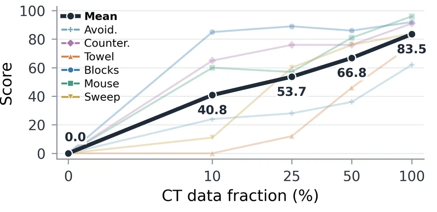

Entangle
Scaling Human-Video In-Context World-Action Models across Unseen Tasks and Contexts
Tsinghua University, GensPI Technology, Motubrain
* Equal contribution
Sweep with a cup
Task-OOD · Astribot S1Mean task score on Astribot S1
Success rate on RoboTwin
Paired episodes in Ent-Dataset
Task-OOD
Six Astribot S1 tasks test generalization to unseen goals and procedures.
Context-OOD
Four scene changes test whether the robot can transfer the demonstrated interaction.
Additional demos
Generated context, object-free imitation, and InfoNCE ablations.
RoboTwin Simulation
One successful rollout from each of the seven held-out RoboTwin tasks. Mean success across the full evaluation is 69.52% over three seeds.
Ent-Dataset
Paired human and robot sequences capture the same manipulations. Each tile shows six moments from a training pair.
Real-robot data scaling
Mean task scores rise from 40.8 to 83.5 as the paired continued-training data grows from 10% to the full pool.

Aligned data improves task following
Entangle learns joint video–action prediction from temporally aligned human and robot sequences. At deployment, a human video specifies the procedure and the robot replans from its current observations.
Citation
@misc{xiang2026entanglescalinghumanvideoincontext,
title={Entangle: Scaling Human-Video In-Context World-Action Models across Unseen Tasks and Contexts},
author={Chendong Xiang and Chengwen Zhang and Ruowen Zhao and Zeyuan Wang and Shuhe Huang and Rongxu Cui and Min Zhao and Fan Bao and Hengkai Tan and Jun Zhu},
year={2026},
eprint={2611.28732},
archivePrefix={arXiv},
primaryClass={cs.RO},
url={https://arxiv.org/abs/2611.28732},
}